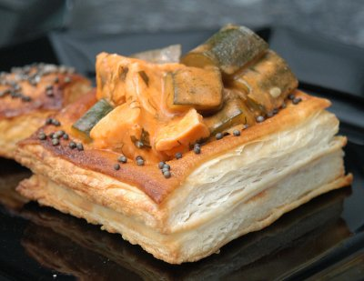

| Zutaten für 4 Personen: | |
| 400 g | Frischlachsfilet |
| 1/2 | Zitrone |
| wenig | Cayennepfeffer |
| 400 g | sehr kleine Zucchetti |
| 1 | Schalotte |
| wenig | Kerbel und Dill |
| 10 g | Butter |
| 1 dl | Gemüsebouillon |
| 1 dl | Halbrahm |
| 1 El | Tomatenketchup |
| 1 El | Cognac |
| 1 Packung (640 g) | ausgewallter, rechteckiger Blätterteig |
| 1 | Eigelb |
| 2 El | Senfsamen |
T-30: Ofen einheizen, Lachs marinieren, Vierecke ausschneiden
T-20: Pastetchen backen, Gemüse dünsten
T-15: Bouillon zufügen
T-10: Fischwürfel pochieren
T-0: Pastetchen einfüllen
Für die Füllung den Lachs in 3 cm grosse Würfel schneiden.
Die Zitronenhälfte auspressen und den Saft über den Lachs geben.
Mit wenig Cayennepfeffer bestreuen.
Zudecken und 20 Minuten in den Kühlschrank stellen.
Für die Pastetchen aus dem Blätterteig grosse Quadrate schneiden. Bei der Hälfte der Quadrate ein inneres Quadrat ausschneiden, dabei vielleicht 3 cm Umrandung stehen lassen.
Die Bodenquadrate dem Rand entlang mit Eigelb bestreichen und sorgfältig die Rahmenquadrate darauf setzen.
Die Rahmenquadrate nun mit Eigelb bestreichen und die Senfkörner (im Originalrezept waren es Sesamsamen) darauf verteilen.
Aus den Resten kleine längliche Rechtecke formen. Jeweils 2 miteinander verdrehen, so dass ein "Mäscheli" entsteht für die Dekoration.
Die Pastetchen 10 Minuten kühl stellen, den Backofen auf 180°C vorheizen.
Anschliessend in der unteren Hälfte des Backofens ca. 20 Minuten backen.
Die Zucchetti schräg in 2 cm breite Stücke schneiden.
Die Schalotte und die Kräuter hacken.
Bouillon zubereiten.
In einer beschichteten Bratpfanne die Butter erwärmen. Schalotten, Kräuter und Zucchetti durchdünsten.
Bouillon beifügen und 5 Minuten köcheln.
Die Fischwürfel darauf legen und zugedeckt 10 Minuten pochieren.
Den Rahm steif schlagen. Ketchup und Cognac (im Original Vermouth) darunter ziehen und mit dem Fischragout mischen.
Aus den Pastetchen den aufgewölbten Pastetchenboden sorgfältig entfernen.
Das Lachsragout in die Pastetchen einfüllen und mit den Mäscheli dekorieren.
Leicht abgewandelt aus Saison-Küche 6/96 Seite 3
Schmeckt fein. Weder ich noch Sandra mögen so Ragout Zeugs besonders aber dieses Rezept kam richtig gut. Zitat Sandra: "Endlich ein Ragout, dass ich wieder einmal bestellen würde!" RE 8.6.2011
@LINKBACK_TAG@ @WAKELOCK@